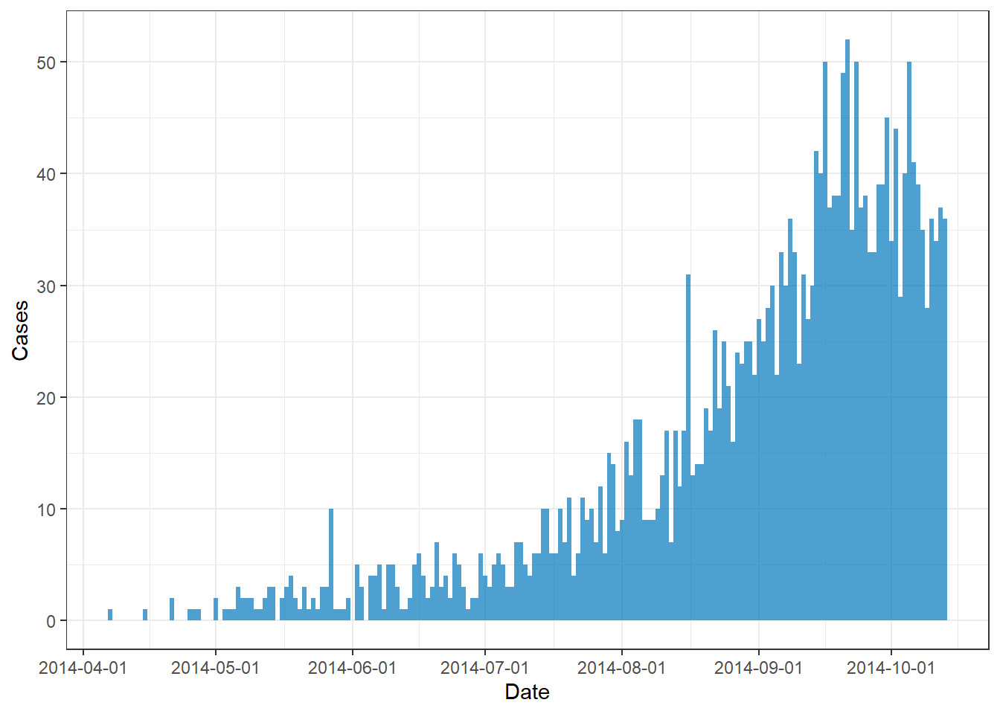

This task covers estimating the basic and effective reproduction number (R0 and Rt), as well as other relevant metrics to quantify transmissibility such as the growth rate. You will learn methods for calculating these key epidemiological metrics from outbreak data, by accounting for reporting delays and uncertainty.
Learning Objectives
Understand the difference between R0 and Rt
Estimate reproduction numbers from case data
Use appropriate methods for different data types
Visualize and interpret reproduction number estimates
Note: Running EpiNow2 can be computationally expensive and may take several minutes to complete. If you want to skip this step, you can download the pre-computed estimates file and place it in your outputs/ folder:
We first import linelist data for an Ebola outbreak that started in April 2014, convert it to incidence, and visualise the epidemic curve.
Code
# INSTALL AND LOAD PACKAGESpacman::p_load(tidyverse, EpiNow2, incidence2, rio, reactable)# LOAD DATA# Import the cleaned linelist datalinelist <-readRDS("data/linelist.rds")# Convert linelist to incidence and format data for EpiNow2incidence <- linelist |> incidence2::incidence(date_index ="date_onset",count_values_to ="confirm",date_names_to ="date",complete_dates =TRUE ) |># Keep the first 90 dates dplyr::slice_head(n =190)# Plotting incidence curveplot(incidence) +labs(x ="Date", y ="Cases")

Estimating Rt
We used {EpiNow2} to estimate the time-varying reproduction number (Rt) for the Ebola outbreak, accounting for reporting delays. We first defined the parameters.